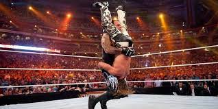

Wrestling is a combat sport that involves grappling, takedowns, and pinning techniques. I have been a fan of wrestling since I was a kid, and I enjoy watching and practicing the sport to this day.
Out of all the professional wrestling organizations, WWE is the one that I cherish the most, and as for my personal preference, the Undertaker stands as the greatest wrestler of all time (GOAT). I have always held him in high esteem and have been a fan of his for a long time. His finishing move is called The Tombstone Pile Driver or RIP. It is a very deadly move and it always does the job of taking out his opponents.
My favourite match of the Undertaker was his Wrestlemania 25 showdown with Shawn Micheals. It was a classic match and action packed throughout.
You can watch the highlights of the match below
Below are some Wrestling Equipment and their Description
| Equipment/Materials | Description |
|---|---|
| Wrestling Mat | A padded surface used for wrestling matches and practice sessions. |
| Wrestling Shoes | Shoes with a rubber sole and good traction to provide grip on the wrestling mat. |
| Singlet | A tight-fitting one-piece outfit worn by wrestlers during matches and practice sessions. |
| Headgear | A protective gear worn on the head to protect the ears from getting injured during wrestling. |
| Water Bottle | A hydration tool to help stay hydrated during long practices and matches. |
If you are interested in learning more about wrestling, you can follow WWE on Twitter.